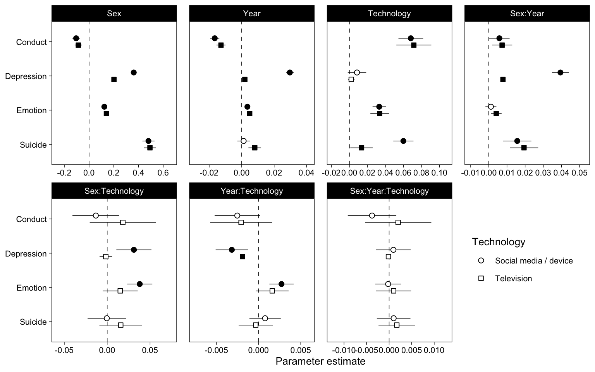

Chapter 8 Latent Variable Models
8.1 Data
8.2 Models
fit <- function(data, items, x, y, name, missing = "ml") {
# Center year
data <- mutate(data, Year = Year - 2017)
# Contrast code sex
data <- mutate(data, Sex = ifelse(Sex=="Male", -0.5, 0.5))
# Drop rows with missing predictor
data <- drop_na(data, all_of(x))
# Drop rows where all outcome items are missing
data <- drop_na(data, all_of(y))
# Mean-center predictors
data <- data %>%
mutate(
across(
all_of(x),
~as.numeric(scale(., center = TRUE, scale = FALSE))
)
)
# Ordered?
if (name=="YRBS") {
data <- mutate(data, across(sad_lonely:suicide_3, ordered))
missing = "listwise"
}
# Create interaction terms because lavaan doesn't know how to
newdata <- model.matrix(
as.formula(str_glue("{y} ~ Sex * Year * {x}")),
data = data
)[,-1] %>% # Take out the intercept column because it causes lavaan to break
as.data.frame()
# Interaction term breaks lavaan so change to dot
names(newdata) <- str_replace_all(names(newdata), ":", ".")
# return(newdata)
newdata <- cbind(data[,items], newdata)
# Combine names of items to a string for lavaan model
items_all <- paste0(items, collapse = " + ")
# Model strings
sem0 <- str_glue("{y} =~ {items_all}\n{y} ~ Sex + Year + Sex.Year")
sem1 <- str_glue("{y} =~ {items_all}\n{y} ~ Sex + Year + {x} + Sex.Year + Sex.{x} + Year.{x} + Sex.Year.{x}")
ml0 <- sem(sem0, data = newdata, missing = missing)
ml1 <- sem(sem1, data = newdata, missing = missing)
tibble(
data = name,
Technology = x,
Outcome = y,
ml0 = list(ml0),
ml1 = list(ml1)
)
}x1 %<-% fit(yrbs, c("sad_lonely", paste0("suicide_", 1:3)), "TV", "Suicide", "YRBS")
x2 %<-% fit(yrbs, c("sad_lonely", paste0("suicide_", 1:3)), "DV", "Suicide", "YRBS")
x3 %<-% fit(mtf, paste0("D_B_", 1:6), "TV", "Depression", "MTF")
x4 %<-% fit(mtf, paste0("D_B_", 1:6), "SM", "Depression", "MTF")
sdq_con <- c("sdqe", "sdqg", "sdql", "sdqr", "sdqv")
sdq_emo <- c("sdqc", "sdqh", "sdqm", "sdqp", "sdqx")
x5 %<-% fit(us, sdq_con, "TV", "Conduct", "US")
x6 %<-% fit(us, sdq_con, "SM", "Conduct", "US")
x7 %<-% fit(us, sdq_emo, "TV", "Emotion", "US")
x8 %<-% fit(us, sdq_emo, "SM", "Emotion", "US")
# Rename variables
fits <- bind_rows(x1,x2,x3,x4,x5,x6,x7,x8)
fits <- fits %>%
mutate(
Technology = ifelse(
Technology %in% c("SM", "DV"),
"Social media / device",
"Television"
)
) %>%
arrange(Outcome, Technology)8.3 Results
coefs <- fits %>%
mutate(p = map(ml1, ~tidy(., conf.int = TRUE))) %>%
unnest(p) %>%
filter(op == "~") %>%
separate(term, c("lhs", "rhs"), sep = " ~ ") %>%
mutate(N = map_dbl(ml1, nobs)) %>%
mutate(N = scales::comma(N, accuracy = 1))
coefs %>%
mutate(Parameter = str_replace(rhs, "SM|DV|TV", "Technology")) %>%
mutate(Parameter = str_replace_all(Parameter, "\\.", ":")) %>%
mutate(Parameter = fct_inorder(Parameter)) %>%
mutate(Outcome = fct_rev(Outcome)) %>%
ggplot(aes(estimate, Outcome, shape = Technology, fill = p.value < 0.05)) +
scale_shape_manual(values = c(21, 22)) +
scale_fill_manual(values = c("white", "black"), guide = FALSE) +
scale_x_continuous(
"Parameter estimate",
breaks = scales::pretty_breaks(),
expand = expansion(.25)
) +
geom_vline(xintercept = 0, lty = 2, size = .25) +
geom_linerangeh(
aes(xmin = conf.low, xmax = conf.high), size = .25,
position = position_dodge2v(.4), show.legend = FALSE
) +
geom_point(
size = 2, position = position_dodge2v(.4),
) +
# geom_text(
# aes(label = N), size = 2, vjust = 2,
# position = position_dodge2v(.4)
# ) +
facet_wrap("Parameter", scales = "free_x", nrow = 2) +
theme(
legend.position = c(.875, .25),
axis.title.y = element_blank(),
panel.spacing.x = unit(12, "pt")
)
# Numbers
coefs %>%
filter(Outcome == "Suicide", rhs == "TV") %>%
select(data:Outcome, estimate:conf.high)## # A tibble: 8 x 4
## data Technology Outcome N
## <chr> <chr> <chr> <chr>
## 1 US Social media / device Conduct 18,815
## 2 US Television Conduct 19,079
## 3 MTF Social media / device Depression 120,265
## 4 MTF Television Depression 367,444
## 5 US Social media / device Emotion 18,811
## 6 US Television Emotion 19,074
## 7 YRBS Social media / device Suicide 24,584
## 8 YRBS Television Suicide 24,593Just time
fits %>%
mutate(p = map(ml0, ~tidy(., conf.int = TRUE))) %>%
unnest(p) %>%
filter(op == "~") %>%
separate(term, c("lhs", "rhs"), sep = " ~ ") %>%
# mutate(
# Parameter = factor(rhs, levels = c("Year", "Technology", "Year x Technology"))
# ) %>%
mutate(Outcome = fct_rev(Outcome)) %>%
ggplot(aes(estimate, Outcome, shape = Technology, fill = p.value < 0.05)) +
scale_shape_manual(values = c(21, 22)) +
scale_fill_manual(values = c("white", "black"), guide = FALSE) +
scale_x_continuous(
"Parameter estimate",
breaks = scales::pretty_breaks(),
expand = expansion(.25)
) +
geom_vline(xintercept = 0, lty = 2, size = .25) +
geom_linerangeh(
aes(xmin = conf.low, xmax = conf.high), size = .25,
position = position_dodge2v(.4), show.legend = FALSE
) +
geom_point(
size = 2, position = position_dodge2v(.4),
) +
facet_wrap("rhs", scales = "free_x", nrow = 1) +
theme(
legend.position = "bottom",
axis.title.y = element_blank(),
panel.spacing.x = unit(12, "pt")
)
## ─ Session info ───────────────────────────────────────────────────────────────
## setting value
## version R version 4.0.2 (2020-06-22)
## os macOS Catalina 10.15.7
## system x86_64, darwin17.0
## ui X11
## language (EN)
## collate en_GB.UTF-8
## ctype en_GB.UTF-8
## tz Europe/London
## date 2020-10-02
##
## ─ Packages ───────────────────────────────────────────────────────────────────
## package * version date lib
## abind 1.4-5 2016-07-21 [1]
## arm 1.11-2 2020-07-27 [1]
## assertthat 0.2.1 2019-03-21 [1]
## backports 1.1.10 2020-09-15 [1]
## base64enc 0.1-3 2015-07-28 [1]
## bayesplot 1.7.2 2020-05-28 [1]
## BDgraph 2.63 2020-08-26 [1]
## blob 1.2.1 2020-01-20 [1]
## bookdown 0.20 2020-06-23 [1]
## boot 1.3-25 2020-04-26 [1]
## bridgesampling 1.0-0 2020-02-26 [1]
## brms * 2.13.10 2020-09-29 [1]
## Brobdingnag 1.2-6 2018-08-13 [1]
## broom * 0.7.0.9001 2020-07-23 [1]
## callr 3.4.4 2020-09-07 [1]
## carData 3.0-4 2020-05-22 [1]
## cellranger 1.1.0 2016-07-27 [1]
## checkmate 2.0.0 2020-02-06 [1]
## cli 2.0.2 2020-02-28 [1]
## cluster 2.1.0 2019-06-19 [1]
## coda 0.19-3 2019-07-05 [1]
## codetools 0.2-16 2018-12-24 [1]
## colorspace 1.4-1 2019-03-18 [1]
## colourpicker 1.1.0 2020-09-14 [1]
## corpcor 1.6.9 2017-04-01 [1]
## crayon 1.3.4 2017-09-16 [1]
## crosstalk 1.1.0.1 2020-03-13 [1]
## curl 4.3 2019-12-02 [1]
## d3Network 0.5.2.1 2015-01-31 [1]
## data.table 1.13.0 2020-07-24 [1]
## DBI 1.1.0 2019-12-15 [1]
## dbplyr 1.4.4 2020-05-27 [1]
## digest 0.6.25 2020-02-23 [1]
## dplyr * 1.0.2 2020-08-18 [1]
## DT 0.15 2020-08-05 [1]
## dygraphs 1.1.1.6 2018-07-11 [1]
## ellipsis 0.3.1 2020-05-15 [1]
## emmeans 1.5.1 2020-09-18 [1]
## estimability 1.3 2018-02-11 [1]
## evaluate 0.14 2019-05-28 [1]
## fansi 0.4.1 2020-01-08 [1]
## farver 2.0.3 2020-01-16 [1]
## fastmap 1.0.1 2019-10-08 [1]
## fdrtool 1.2.15 2015-07-08 [1]
## forcats * 0.5.0 2020-03-01 [1]
## foreign 0.8-80 2020-05-24 [1]
## Formula 1.2-3 2018-05-03 [1]
## fs 1.5.0 2020-07-31 [1]
## future * 1.19.1 2020-09-22 [1]
## generics 0.0.2 2018-11-29 [1]
## ggplot2 * 3.3.2 2020-06-19 [1]
## ggridges 0.5.2 2020-01-12 [1]
## ggstance * 0.3.4 2020-04-02 [1]
## glasso 1.11 2019-10-01 [1]
## globals 0.13.0 2020-09-17 [1]
## glue 1.4.2 2020-08-27 [1]
## gridExtra 2.3 2017-09-09 [1]
## gtable 0.3.0 2019-03-25 [1]
## gtools 3.8.2 2020-03-31 [1]
## haven 2.3.1 2020-06-01 [1]
## Hmisc 4.4-1 2020-08-10 [1]
## hms 0.5.3 2020-01-08 [1]
## htmlTable 2.1.0 2020-09-16 [1]
## htmltools 0.5.0 2020-06-16 [1]
## htmlwidgets 1.5.1 2019-10-08 [1]
## httpuv 1.5.4 2020-06-06 [1]
## httr 1.4.2 2020-07-20 [1]
## huge 1.3.4.1 2020-04-01 [1]
## igraph 1.2.5 2020-03-19 [1]
## inline 0.3.16 2020-09-06 [1]
## jpeg 0.1-8.1 2019-10-24 [1]
## jsonlite 1.7.1 2020-09-07 [1]
## knitr * 1.30 2020-09-22 [1]
## kutils 1.70 2020-04-29 [1]
## later 1.1.0.1 2020-06-05 [1]
## lattice 0.20-41 2020-04-02 [1]
## latticeExtra 0.6-29 2019-12-19 [1]
## lavaan * 0.6-7 2020-07-31 [1]
## lifecycle 0.2.0 2020-03-06 [1]
## lisrelToR 0.1.4 2013-05-08 [1]
## listenv 0.8.0 2019-12-05 [1]
## lme4 1.1-23 2020-04-07 [1]
## loo 2.3.1 2020-07-14 [1]
## lubridate 1.7.9 2020-06-08 [1]
## magrittr 1.5 2014-11-22 [1]
## markdown 1.1 2019-08-07 [1]
## MASS 7.3-53 2020-09-09 [1]
## Matrix 1.2-18 2019-11-27 [1]
## matrixcalc 1.0-3 2012-09-15 [1]
## matrixStats 0.57.0 2020-09-25 [1]
## mi 1.0 2015-04-16 [1]
## mime 0.9 2020-02-04 [1]
## miniUI 0.1.1.1 2018-05-18 [1]
## minqa 1.2.4 2014-10-09 [1]
## mnormt 2.0.2 2020-09-01 [1]
## modelr 0.1.8 2020-05-19 [1]
## multcomp 1.4-13 2020-04-08 [1]
## munsell 0.5.0 2018-06-12 [1]
## mvtnorm 1.1-1 2020-06-09 [1]
## nlme 3.1-149 2020-08-23 [1]
## nloptr 1.2.2.2 2020-07-02 [1]
## nnet 7.3-14 2020-04-26 [1]
## OpenMx 2.18.1 2020-08-28 [1]
## openxlsx 4.2.2 2020-09-17 [1]
## pacman 0.5.1 2019-03-11 [1]
## pbapply 1.4-3 2020-08-18 [1]
## pbivnorm 0.6.0 2015-01-23 [1]
## pillar 1.4.6 2020-07-10 [1]
## pkgbuild 1.1.0 2020-07-13 [1]
## pkgconfig 2.0.3 2019-09-22 [1]
## plyr 1.8.6 2020-03-03 [1]
## png 0.1-7 2013-12-03 [1]
## prettyunits 1.1.1 2020-01-24 [1]
## processx 3.4.4 2020-09-03 [1]
## promises 1.1.1 2020-06-09 [1]
## ps 1.3.4 2020-08-11 [1]
## psych 2.0.8 2020-09-04 [1]
## purrr * 0.3.4 2020-04-17 [1]
## qgraph 1.6.5 2020-02-21 [1]
## R6 2.4.1 2019-11-12 [1]
## RColorBrewer 1.1-2 2014-12-07 [1]
## Rcpp * 1.0.5 2020-07-06 [1]
## RcppParallel 5.0.2 2020-06-24 [1]
## readr * 1.3.1 2018-12-21 [1]
## readxl 1.3.1 2019-03-13 [1]
## regsem 1.5.2 2020-02-19 [1]
## reprex 0.3.0 2019-05-16 [1]
## reshape2 1.4.4 2020-04-09 [1]
## rjson 0.2.20 2018-06-08 [1]
## rlang 0.4.7 2020-07-09 [1]
## rmarkdown 2.4.0 2020-09-11 [1]
## rockchalk 1.8.144 2019-03-08 [1]
## rpart 4.1-15 2019-04-12 [1]
## rsconnect 0.8.16 2019-12-13 [1]
## Rsolnp 1.16 2015-12-28 [1]
## rstan 2.21.3 2020-09-29 [1]
## rstantools 2.1.1 2020-07-06 [1]
## rstudioapi 0.11 2020-02-07 [1]
## rvest 0.3.6 2020-07-25 [1]
## sandwich 2.5-1 2019-04-06 [1]
## scales 1.1.1 2020-05-11 [1]
## sem 3.1-11 2020-05-19 [1]
## semPlot * 1.1.2 2019-08-20 [1]
## sessioninfo * 1.1.1 2018-11-05 [1]
## shiny 1.5.0 2020-06-23 [1]
## shinyjs 2.0.0 2020-09-09 [1]
## shinystan 2.5.0 2018-05-01 [1]
## shinythemes 1.1.2 2018-11-06 [1]
## StanHeaders 2.21.0-6 2020-08-16 [1]
## statmod 1.4.34 2020-02-17 [1]
## stringi 1.5.3 2020-09-09 [1]
## stringr * 1.4.0 2019-02-10 [1]
## survival 3.2-3 2020-06-13 [1]
## TH.data 1.0-10 2019-01-21 [1]
## threejs 0.3.3 2020-01-21 [1]
## tibble * 3.0.3 2020-07-10 [1]
## tidyr * 1.1.2 2020-08-27 [1]
## tidyselect 1.1.0 2020-05-11 [1]
## tidyverse * 1.3.0 2019-11-21 [1]
## tmvnsim 1.0-2 2016-12-15 [1]
## truncnorm 1.0-8 2018-02-27 [1]
## utf8 1.1.4 2018-05-24 [1]
## V8 3.2.0 2020-06-19 [1]
## vctrs 0.3.4 2020-08-29 [1]
## whisker 0.4 2019-08-28 [1]
## withr 2.3.0 2020-09-22 [1]
## xfun 0.18 2020-09-29 [1]
## XML 3.99-0.5 2020-07-23 [1]
## xml2 1.3.2 2020-04-23 [1]
## xtable 1.8-4 2019-04-21 [1]
## xts 0.12.1 2020-09-09 [1]
## yaml 2.2.1 2020-02-01 [1]
## zip 2.1.1 2020-08-27 [1]
## zoo 1.8-8 2020-05-02 [1]
## source
## CRAN (R 4.0.0)
## CRAN (R 4.0.2)
## CRAN (R 4.0.0)
## CRAN (R 4.0.2)
## CRAN (R 4.0.0)
## CRAN (R 4.0.0)
## CRAN (R 4.0.2)
## CRAN (R 4.0.0)
## CRAN (R 4.0.2)
## CRAN (R 4.0.2)
## CRAN (R 4.0.0)
## Github (paul-buerkner/brms@9f75e2d)
## CRAN (R 4.0.0)
## Github (tidymodels/broom@7db1139)
## CRAN (R 4.0.2)
## CRAN (R 4.0.0)
## CRAN (R 4.0.0)
## CRAN (R 4.0.0)
## CRAN (R 4.0.0)
## CRAN (R 4.0.2)
## CRAN (R 4.0.0)
## CRAN (R 4.0.2)
## CRAN (R 4.0.0)
## CRAN (R 4.0.2)
## CRAN (R 4.0.0)
## CRAN (R 4.0.0)
## CRAN (R 4.0.0)
## CRAN (R 4.0.0)
## CRAN (R 4.0.0)
## CRAN (R 4.0.2)
## CRAN (R 4.0.0)
## CRAN (R 4.0.0)
## CRAN (R 4.0.0)
## CRAN (R 4.0.2)
## CRAN (R 4.0.2)
## CRAN (R 4.0.0)
## CRAN (R 4.0.0)
## CRAN (R 4.0.2)
## CRAN (R 4.0.0)
## CRAN (R 4.0.0)
## CRAN (R 4.0.0)
## CRAN (R 4.0.0)
## CRAN (R 4.0.0)
## CRAN (R 4.0.0)
## CRAN (R 4.0.0)
## CRAN (R 4.0.2)
## CRAN (R 4.0.0)
## CRAN (R 4.0.2)
## CRAN (R 4.0.2)
## CRAN (R 4.0.0)
## CRAN (R 4.0.1)
## CRAN (R 4.0.0)
## CRAN (R 4.0.0)
## CRAN (R 4.0.0)
## CRAN (R 4.0.2)
## CRAN (R 4.0.2)
## CRAN (R 4.0.0)
## CRAN (R 4.0.0)
## CRAN (R 4.0.0)
## CRAN (R 4.0.0)
## CRAN (R 4.0.2)
## CRAN (R 4.0.0)
## CRAN (R 4.0.2)
## CRAN (R 4.0.1)
## CRAN (R 4.0.0)
## CRAN (R 4.0.0)
## CRAN (R 4.0.2)
## CRAN (R 4.0.0)
## CRAN (R 4.0.0)
## CRAN (R 4.0.2)
## CRAN (R 4.0.0)
## CRAN (R 4.0.2)
## CRAN (R 4.0.2)
## CRAN (R 4.0.0)
## CRAN (R 4.0.0)
## CRAN (R 4.0.2)
## CRAN (R 4.0.0)
## CRAN (R 4.0.2)
## CRAN (R 4.0.0)
## CRAN (R 4.0.0)
## CRAN (R 4.0.0)
## CRAN (R 4.0.0)
## CRAN (R 4.0.2)
## CRAN (R 4.0.1)
## CRAN (R 4.0.0)
## CRAN (R 4.0.0)
## CRAN (R 4.0.2)
## CRAN (R 4.0.2)
## CRAN (R 4.0.0)
## CRAN (R 4.0.2)
## CRAN (R 4.0.0)
## CRAN (R 4.0.0)
## CRAN (R 4.0.0)
## CRAN (R 4.0.0)
## CRAN (R 4.0.2)
## CRAN (R 4.0.0)
## CRAN (R 4.0.0)
## CRAN (R 4.0.0)
## CRAN (R 4.0.0)
## CRAN (R 4.0.2)
## CRAN (R 4.0.2)
## CRAN (R 4.0.2)
## CRAN (R 4.0.2)
## CRAN (R 4.0.2)
## CRAN (R 4.0.0)
## CRAN (R 4.0.2)
## CRAN (R 4.0.0)
## CRAN (R 4.0.2)
## CRAN (R 4.0.2)
## CRAN (R 4.0.0)
## CRAN (R 4.0.0)
## CRAN (R 4.0.0)
## CRAN (R 4.0.0)
## CRAN (R 4.0.2)
## CRAN (R 4.0.1)
## CRAN (R 4.0.2)
## CRAN (R 4.0.2)
## CRAN (R 4.0.0)
## CRAN (R 4.0.0)
## CRAN (R 4.0.0)
## CRAN (R 4.0.0)
## CRAN (R 4.0.2)
## CRAN (R 4.0.0)
## CRAN (R 4.0.0)
## CRAN (R 4.0.0)
## CRAN (R 4.0.0)
## CRAN (R 4.0.0)
## CRAN (R 4.0.0)
## CRAN (R 4.0.0)
## CRAN (R 4.0.2)
## Github (cpsievert/rmarkdown@b79fb4d)
## CRAN (R 4.0.0)
## CRAN (R 4.0.2)
## CRAN (R 4.0.0)
## CRAN (R 4.0.0)
## Github (stan-dev/rstan@ae36e6f)
## CRAN (R 4.0.2)
## CRAN (R 4.0.0)
## CRAN (R 4.0.2)
## CRAN (R 4.0.0)
## CRAN (R 4.0.0)
## CRAN (R 4.0.0)
## CRAN (R 4.0.0)
## CRAN (R 4.0.0)
## CRAN (R 4.0.0)
## CRAN (R 4.0.2)
## CRAN (R 4.0.0)
## CRAN (R 4.0.0)
## CRAN (R 4.0.2)
## CRAN (R 4.0.0)
## CRAN (R 4.0.2)
## CRAN (R 4.0.0)
## CRAN (R 4.0.2)
## CRAN (R 4.0.0)
## CRAN (R 4.0.0)
## CRAN (R 4.0.2)
## CRAN (R 4.0.2)
## CRAN (R 4.0.0)
## CRAN (R 4.0.0)
## CRAN (R 4.0.0)
## CRAN (R 4.0.0)
## CRAN (R 4.0.0)
## CRAN (R 4.0.2)
## CRAN (R 4.0.2)
## CRAN (R 4.0.0)
## CRAN (R 4.0.2)
## CRAN (R 4.0.2)
## CRAN (R 4.0.2)
## CRAN (R 4.0.0)
## CRAN (R 4.0.0)
## CRAN (R 4.0.2)
## CRAN (R 4.0.0)
## CRAN (R 4.0.2)
## CRAN (R 4.0.0)
##
## [1] /Library/Frameworks/R.framework/Versions/4.0/Resources/library